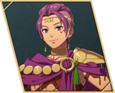

Peppe
- Chinese name
- 佩佩
- Game8 tier
- D
- Used in
- Path 1: Cai
- Personal abilities
- Hunter's Snare, King's Majesty
- Boons
- Bow, Infantry, Sword
- Banes
- White Magic
- Likes
- The spirits, the sun, his hometown
Growth rates
| HP | Str | Mag | Spd | Dex | Def | Res | Lck | Cha |
|---|---|---|---|---|---|---|---|---|
| 30 | 30 | 25 | 60 | 45 | 30 | 30 | 45 | 30 |
Gifts they like
- Loved
- Arrowhead Gem
- Really liked
- Board-Game Tactics, Common Coffee, Crimson Ghosh, Joint-Relief Gloves, Kitten Figurine, Magic-Trick Set, Outdoor Cooking Set, Pack of Pastels, Pastry Cookbook, Protection Figurine, Sharp Fishhook, Spirit Board Game, Sturdy Rucksack, The Works of Dante, Training Pillar, Training Weights
Paired ending
Their only listed ending partner is Eshmel, who is paired elsewhere in this plan. See the Supports page to swap.
Recruiting
| Path | Appears | Support | Renown | Item or task | Where / how | Recruit in |
|---|---|---|---|---|---|---|
| Path 1 (Cai) | Ch3 | 1 | 9 | Clear Bertrand's paralogue | Talk to Gabriel in Dagsion between 9/17 and 9/25 (Ch10) | Ch10 |
Builds
Path 1: Cai (Normal)
- Hunter Beginner on join
ranks: Bow D / Sword D - Rogue Specialty Lv20
ranks: Bow C / Sword C - Sniper Advanced Lv35
ranks: Bow B
- Joins
- S1/R9 after Bertrand's paralogue (Ch10)
- Role
- Infantry archer
- Train
- Bow to B, Sword to C (Rogue).
- Gear
- Bows.
- Mount etc.
- Rogue's thief passive picks up extra materials (NGA).
- Level in
- Hunter: Dex 55% · Str 30% · Spd 70%
Rogue: Dex 55% · Str 30% · Spd 75%
Sniper: Dex 65% · Str 35% · Spd 70% - Master here
- Rogue → In Shadow (Avo +10 in the next combat after a kill); Sniper → Marksmanship (Hit +15 with a bow)
- Farm only
- Archer → Crescendo (Hit +3 per kill for the map (max +30)); Warrior → Practiced Art (Hit +10 when attacking with a combat art)
- Equip order
- Hunter's Snare → King's Majesty → Crescendo → Marksmanship → Practiced Art → Bow Lv. 3 at B+ (Hit/Avo +5)
- Why
- Covers Rogue. D-tier and joins late; used mainly as a backline archer and for chip damage.